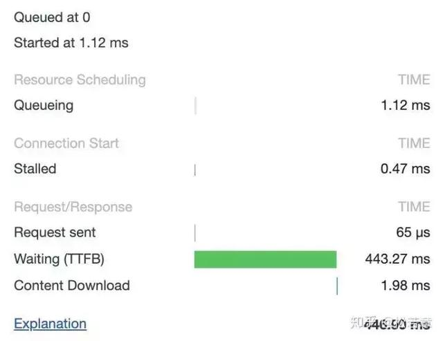

HTTP协议¶
超文本传输协议(HTTP)是一种通信协议，它允许将超文本标记语言(HTML)文档从Web服务器传送到客户端的浏览器。目前广泛使用的是HTTP/1.1 版本
HTTP协议是无状态的
HTTP消息的结构¶
请求消息¶
Request 消息分为3部分，第一部分叫Request line, 第二部分叫Request header, 第三部分是body. header和body之间有个空行， 结构如下图
{kind=link}
注意： 请求头和请求体之间用换行隔开(\r\n)
响应消息¶
第一部分叫Response line, 第二部分叫Response header，第三部分是body. header字段之间要有空行（\r\n)，header和body之间也有个空行, 结构如下图

HTTP Status Code¶
HTTP cache¶
{kind=link}
cache相关的头¶
Cache-Control¶
选项值有：
- Public ：所有内容都将被缓存，在响应头中设置
- Private ：内容只缓存到私有服务器中，在响应头中设置
- no-cache ：不是不缓存，而是缓存需要校验。
- no-store ：所有内容都不会被缓存到缓存或Internet临时文件中，在响应头中设置 must-revalidation/proxy-revalidation ：如果缓存的内容失效，请求必须发送到服务器/代理以进行重新验证，在请求头中设置
- max-age=xxx ：缓存的内容将在xxx秒后失效，这个选项只在HTTP1.1中可用，和Last-Modified一起使用时优先级较高，在响应头中设置
Expires¶
它通常的使用格式是Expires:Fri ,24 Dec 2027 04:24:07 GMT，后面跟的是日期和时间，超过这个时间后，缓存的内容将失效，浏览器在发出请求之前会先检查这个页面的这个字段，查看页面是否已经过期，过期了就重新向服务器发起请求
Last-Modified / If-Modified¶
它一般用于表示一个服务器上的资源最后的修改时间，资源可以是静态或动态的内容， 通过这个最后修改时间可以判断当前请求的资源是否是最新的。 一般服务端在响应头中返回一个Last-Modified字段，告诉浏览器这个页面的最后修改时间， 浏览器再次请求时会在请求头中增加一个If-Modified字段，询问当前缓存的页面是否是最新的， 如果是最新的就返回304状态码，告诉浏览器是最新的，服务器也不会传输新的数据
Etag/If-None-Match¶
一般用于当Cache-Control:no-cache时，用于验证缓存有效性。
它的作用是让服务端给每个页面分配一个唯一 的编号，然后通过这个编号来区分当前这个页面是否是最新的， 这种方式更加灵活，但是后端如果有多台Web服务器时不太好处理，因为每个Web服务器都要记住网站的所有资源，否则浏览器返回这个编号就没有意义了
跨域分类¶
CORS跨域访问的请求分三种: - simple request
如果一个请求没有包含任何自定义请求头，而且它所使用HTTP动词是GET，HEAD或POST之一，那么它就是一个Simple Request。但是在使用POST作为请求的动词时，该请求的Content-Type需要是application/x-www-form-urlencoded，multipart/form-data或text/plain之一。
-
preflighted request(预请求)
如果一个请求包含了任何自定义请求头，或者它所使用的HTTP动词是GET，HEAD或POST之外的任何一个动词，那么它就是一个Preflighted Request。如果POST请求的Content-Type并不是application/x-www-form-urlencoded，multipart/form-data或text/plain之一，那么其也是Preflighted Request。
-
requests with credential 一般情况下，一个跨域请求不会包含当前页面的用户凭证。一旦一个跨域请求包含了当前页面的用户凭证，那么其就属于Requests with Credential。
对于simple request 只需要在后端程序处理时候设Access-Control-Allow-Orgin头就可以了。
对于preflighted request 每次都会请求2次，第一次options（firefox下看不到这次请求，chrome可以看见)。如果只能跟simple request 一样只设置access-control-allow-orgin是不行的。 还必须处理$_SERVER['REQUEST_METHOD'] == 'OPTIONS'，2者都必须处理
Cors相关的HTTP响应头¶
-
Access-Control-Allow-Origin
origin参数指定一个允许向该服务器提交请求的URI.对于一个不带有credentials的请求,可以指定为'*',表示允许来自所有域的请求。如果服务器端指定了域名,而不是'*',那么响应头的Vary值里必须包含Origin.它告诉客户端: 响应是根据请求头里的Origin的值来返回不同的内容的.
-
Access-Control-Expose-Headers
设置浏览器允许访问的服务器的头信息的白名单
这样, X-My-Custom-Header 和 X-Another-Custom-Header这两个头信息,都可以被浏览器得到. -
Access-Control-Max-Age
这个头告诉我们这次预请求的结果的有效期是多久,如下:
delta-seconds 参数表示,允许这个预请求的参数缓存的秒数,在此期间,不用发出另一条预检请求.
-
Access-Control-Allow-Credentials
告知客户端,当请求的credientials属性是true的时候,响应是否可以被得到.当它作为预请求的响应的一部分时,它用来告知实际的请求是否使用了credentials。
注意,简单的GET请求不会预检,所以如果一个请求是为了得到一个带有credentials的资源,而响应里又没有Access-Control-Allow-Credentials头信息,那么说明这个响应被忽略了.
-
Access-Control-Allow-Methods
指明资源可以被请求的方式有哪些(一个或者多个). 这个响应头信息在客户端发出预检请求的时候会被返回. 上面有相关的例子.
-
Access-Control-Allow-Headers
多个HTTP请求头， 用逗号分隔
Cors相关的HTTP请求头¶
-
Origin
表明发送请求或者预请求的域
参数origin是一个URI,告诉服务器端,请求来自哪里.它不包含任何路径信息,只是服务器名.
注意: Origin的值可以是一个空字符串,这是很有用的. 注意,不仅仅是跨域请求,普通请求也会带有ORIGIN头信息.
-
Access-Control-Request-Method
在发出预检请求时带有这个头信息,告诉服务器在实际请求时会使用的请求方式
-
Access-Control-Request-Headers
在发出预检请求时带有这个头信息,告诉服务器在实际请求时会携带的自定义头信息.如有多个,可以用逗号分开.
HTTPS的四次握手过程¶

https握手过程分为两步：
- 通过CA验证服务端的证书是否真实
- 交换客户端和服务端的对称加密秘钥，以后数据传输，靠这两个进行加密
引入CA目的是为了防止中间人攻击。即攻击者伪造成服务端，然后发送假的证书。
FAQ¶
现代浏览器在与服务器建立了一个 TCP 连接后是否会在一个 HTTP 请求完成后断开?什么情况下会断开?¶
默认情况下建立 TCP 连接不会断开，只有在请求报头中声明 Connection: close 才会在请求完成后关闭连接。
在 HTTP/1.0 中，一个服务器在发送完一个 HTTP 响应后，会断开 TCP 链接。但是这样每次请求都会重新建立和断开 TCP 连接，代价过大。所以虽然标准中没有设定，某些服务器对 Connection: keep-alive 的 Header 进行了支持。意思是说，完成这个 HTTP 请求之后，不要断开 HTTP 请求使用的 TCP 连接。这样的好处是连接可以被重新使用，之后发送 HTTP 请求的时候不需要重新建立 TCP 连接，以及如果维持连接，那么 SSL 的开销也可以避免，两张图片是短时间内两次访问 https://www.github.com 的时间统计：
{kind=link}
头一次访问，有初始化连接和 SSL 开销。 
{kind=link}
初始化连接和 SSL 开销消失了，说明使用的是同一个 TCP 连接。
持久连接：既然维持 TCP 连接好处这么多，HTTP/1.1 就把 Connection 头写进标准，并且默认开启持久连接，除非请求中写明 Connection: close，那么浏览器和服务器之间是会维持一段时间的 TCP 连接，不会一个请求结束就断掉。
一个 TCP 连接可以对应几个 HTTP 请求?¶
如果维持连接，一个 TCP 连接是可以发送多个 HTTP 请求的。
一个 TCP 连接中 HTTP 请求发送可以一起发送么(比如一起发三个请求，再三个响应一起接收)?¶
在 HTTP/1.1 存在 Pipelining 技术可以完成这个多个请求同时发送，但是由于浏览器默认关闭，所以可以认为这是不可行的。在 HTTP2 中由于 Multiplexing 特点的存在，多个 HTTP 请求可以在同一个 TCP 连接中并行进行
HTTP/1.1 存在一个问题，单个 TCP 连接在同一时刻只能处理一个请求，意思是说：两个请求的生命周期不能重叠，任意两个 HTTP 请求从开始到结束的时间在同一个 TCP 连接里不能重叠。
虽然 HTTP/1.1 规范中规定了 Pipelining 来试图解决这个问题，但是这个功能在浏览器中默认是关闭的。
但是，HTTP2 提供了 Multiplexing 多路传输特性，可以在一个 TCP 连接中同时完成多个 HTTP 请求。
{kind=link}
绿色是发起请求到请求返回的等待时间，蓝色是响应的下载时间，可以看到都是在同一个 Connection，并行完成的。
为什么有的时候刷新页面不需要重新建立 SSL 连接?¶
TCP 连接有的时候会被浏览器和服务端维持一段时间。TCP 不需要重新建立，SSL 自然也会用之前的。
浏览器对同一 Host 建立 TCP 连接到数量有没有限制?¶
有。Chrome 最多允许对同一个 Host 建立六个 TCP 连接。不同的浏览器有一些区别。